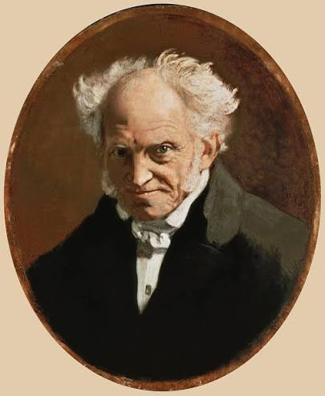

Arthur Schopenhauer

Arthur Schopenhauer nació en Danzig, en una familia burguesa adinerada. Su padre, llamado Heinrich Flores Schopenhauer, era un comerciante que le puso al autor una visión independiente del mundo, mientras que su madre fue una reconocida escritora que mantuvo un concurrido salón literario al que asistían figuras de muy alto nivel. Estudió en Gotinga y en Berlín, doctorándose con la tesis llamada Sobre la raíz cuádruple del principio de la razón suficiente. Su pensamiento fue nutrido muy profundamente por la filosofía de Immanuel Kant, de Platón, pero más fundamentalmente de la filosofía oriental, especialmente en el budismo, lo cual era muy raro para la época de Europa. A diferencia de su oponente, Schopenhauer tuvo un pesimismo filosófico, en el cual sostuvo que el núcleo fundamental de la realidad es una voluntad ciega, insaciable e irracional, que impulsa todo lo existente hacia el sufrimiento. El arte de ser feliz no representa un manual de autoayuda, sino que es una manera pragmática de desengañarse sobre las realidades. Es un conjunto de tácticas eudemonológicas orientadas a no alcanzar un estado de felicidad, sino a minimizar el dolor en un mundo guiado por el sufrimiento.